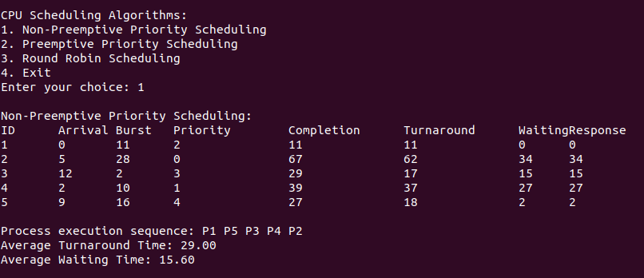

Overview
Non-Preemptive Priority Scheduling is a CPU scheduling algorithm where each process is assigned a priority, and the process with the highest priority is selected for execution next. Here's an overview of how it works:
How It Works
- Order of Execution: Processes are scheduled based on their priority. The process with the highest priority (usually denoted by the smallest numerical value) is executed first. If two processes have the same priority, the tie can be broken using their arrival times.
- Non-Preemptive Nature: Once a process starts executing, it runs to completion without being interrupted, even if another process with a higher priority arrives. This means the CPU will not switch tasks until the current process finishes its execution.
- Priority Assignment: Priorities can be assigned based on various criteria, such as the importance of the task, deadlines, or resource requirements.
Advantages
- Simplicity: It is easy to implement and understand.
- Ensures Important Tasks are Executed: High-priority tasks are guaranteed to be executed first, which can be beneficial in real-time systems where certain tasks must be completed within strict deadlines.
Disadvantages
- Starvation: Lower-priority processes may suffer from indefinite delays if higher-priority processes keep arriving, leading to starvation.
- Not Ideal for Time-Sharing Systems: It may not provide the best performance in systems where responsiveness and efficient multitasking are crucial.
Non-Preemptive Priority Scheduling Algorithm Code
#include <stdio.h>
#include <limits.h>
#define MAX_PROCESSES 10
typedef struct {
int id;
int arrival_time;
int burst_time;
int completion_time;
int waiting_time;
int turnaround_time;
int response_time;
int priority;
} Process;
void calculateTimes(Process processes[], int n) {
for (int i = 0; i < n; i++) {
processes[i].turnaround_time = processes[i].completion_time - processes[i].arrival_time;
processes[i].waiting_time = processes[i].turnaround_time - processes[i].burst_time;
}
float total_turnaround_time = 0, total_waiting_time = 0;
for (int i = 0; i < n; i++) {
total_turnaround_time += processes[i].turnaround_time;
total_waiting_time += processes[i].waiting_time;
}
printf("\nAverage Turnaround Time: %.2f\n", total_turnaround_time / n);
printf("Average Waiting Time: %.2f\n", total_waiting_time / n);
}
void print_processes(Process processes[], int n) {
printf("\nID\tArrival\tBurst\tPriority\tCompletion\tTurnaround\tWaiting\n");
for (int i = 0; i < n; i++) {
printf("%d\t%d\t%d\t%d\t\t%d\t\t%d\t\t%d\n",
processes[i].id,
processes[i].arrival_time,
processes[i].burst_time,
processes[i].priority,
processes[i].completion_time,
processes[i].turnaround_time,
processes[i].waiting_time);
}
}
void nonPreemptivePriority(Process processes[], int n) {
int currentTime = 0;
int completed = 0;
while (completed < n) {
int maxPriority = -1;
int index = -1;
for (int i = 0; i < n; i++) {
if (processes[i].arrival_time <= currentTime && processes[i].completion_time == 0) {
if (processes[i].priority > maxPriority) {
maxPriority = processes[i].priority;
index = i;
}
}
}
if (index != -1) {
currentTime += processes[index].burst_time;
processes[index].completion_time = currentTime;
completed++;
} else {
currentTime++;
}
}
calculateTimes(processes, n);
}
int main() {
Process processes[MAX_PROCESSES];
int n;
printf("Enter the number of processes: ");
scanf("%d", &n);
for (int i = 0; i < n; i++) {
processes[i].id = i + 1;
printf("Enter arrival time for Process %d: ", processes[i].id);
scanf("%d", &processes[i].arrival_time);
printf("Enter burst time for Process %d: ", processes[i].id);
scanf("%d", &processes[i].burst_time);
printf("Enter priority for Process %d: ", processes[i].id);
scanf("%d", &processes[i].priority);
processes[i].completion_time = 0;
}
nonPreemptivePriority(processes, n);
print_processes(processes, n);
return 0;
}
Sample Input
Processes: 1, 2, 3, 4, 5
Arrivat Times: 0, 5, 12, 2, 9
Burst Times: 11, 28, 2, 10, 16
Priority (0-LOWEST AND 4-HIGHEST): 2, 0, 3, 1, 4
Sample Output
